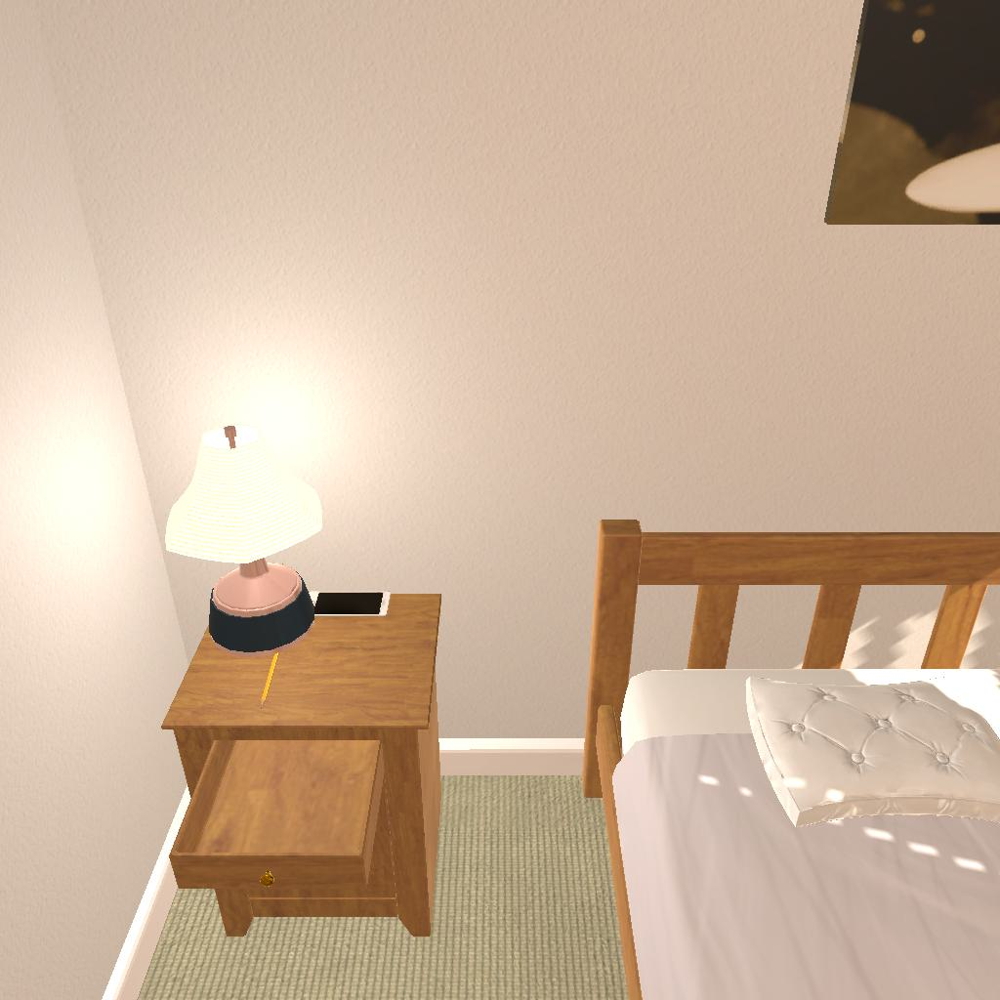

---------------------------------------------------------task: 0---------------------------------------------------------
--------------------------------------------------------------------------------------------------------------------------------------------------------------------
--------------------------------------------------------------------------------------------------------------------------------------------------------------------
Step:--------------------------------------------------------------------------8-------------------------------------------------------------------------------
----------------------------------------
VLM Prompt:
Image1:
**Instruction**
1. Analyze the provided image to identify all visible household objects, focusing on those relevant to the task description "examine the alarmclock with the desklamp."
2. Use the analysis of the image and the task hint "The agent must find an object of the desired type, locate and turn on a light source with the desired object in-hand." to answer the question: what is the most reasonable action in the choices for the task description "examine the alarmclock with the desklamp"?
4. Decide and write the answer using the template: The answer is: (i): , where i is the real number. If there is no desired object in the image, search every place based on **Initial Observation** to find the object. And if no one is exactly correct, choose a similar answer.
**Initial Observation**
You are in the middle of a room. Looking quickly around you, you can see bed (1), sidetable (1), drawer (1-11), dresser (1), safe (1), laundryhamper (1), garbagecan (1)
**Answer Choices**
(1): go to bed 1
(2): go to sidetable 1
(3): go to dresser 1
(4): go to drawer 2
(5): go to drawer 3
(6): go to drawer 4
(7): go to drawer 5
(8): go to drawer 6
(9): go to drawer 7
(10): go to drawer 8
(11): go to drawer 9
(12): go to drawer 10
(13): go to drawer 11
(14): go to safe 1
(15): go to laundryhamper 1
(16): go to garbagecan 1
(17): close drawer 1
(18): take pillow 1 from drawer 1
(19): take cellphone 1 from drawer 1
(20): take pencil 1 from drawer 1
(21): use desklamp 1
(22): examine drawer 1
**Answer**
Let's think step by step by following the instructions.
----------------------------------------
----------------------------------------
Original Response:
The task is to examine the alarm clock with the desk lamp. From the image provided, we can see a desk lamp on sidetable 1, and what could be an alarm clock (though it's not clearly visible). Since the desk lamp is already on and the alarm clock is likely on the sidetable, the most reasonable action would be to approach the sidetable to examine the alarm clock with the light from the desk lamp.
The answer is: (2): go to sidetable 1
----------------------------------------
----------------------------------------
>>> Refine Original VLM Response and Get Pure Action: go to sidetable 1
----------------------------------------
-----------------------------------------------------------------
Running time: 6.55619478225708 seconds
Total Money: 0.15833
-----------------------------------------------------------------
-----------------------------------------------------------------
Text Observation:You arrive at loc 1. On the sidetable 1, you see a pillow 1, a desklamp 1, a cellphone 1, and a pencil 1.
-----------------------------------------------------------------
UNSUCCEED